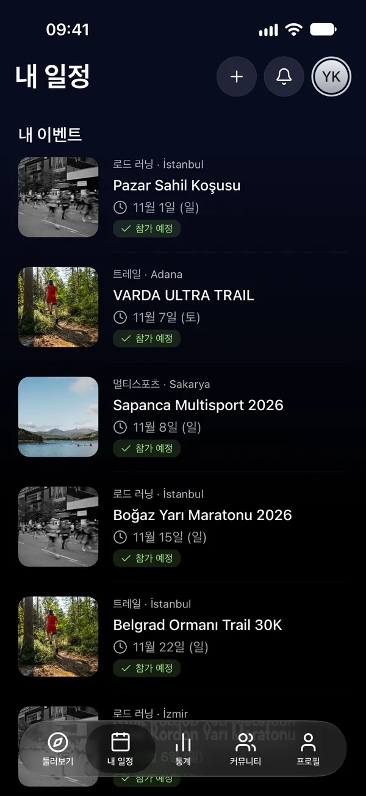
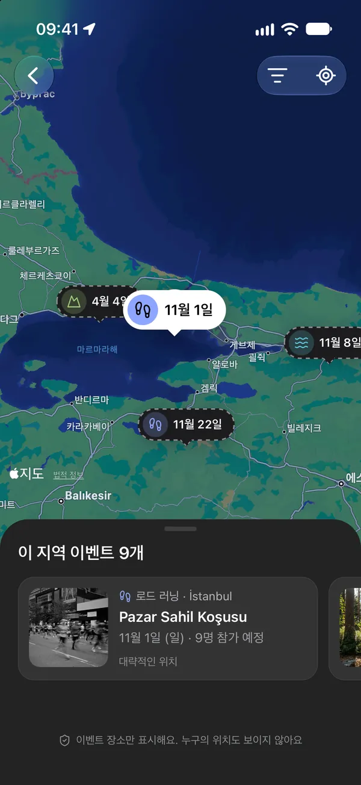
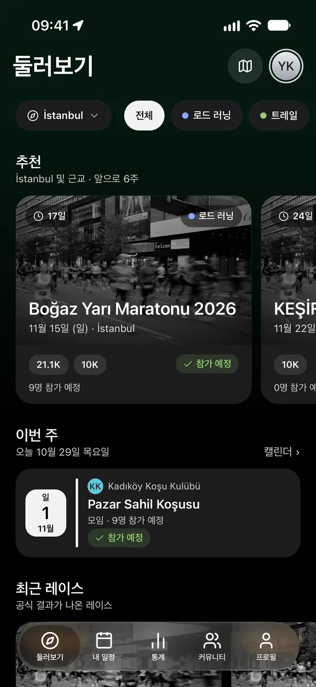
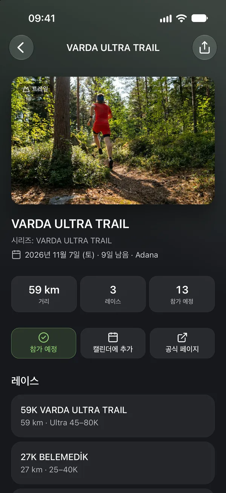
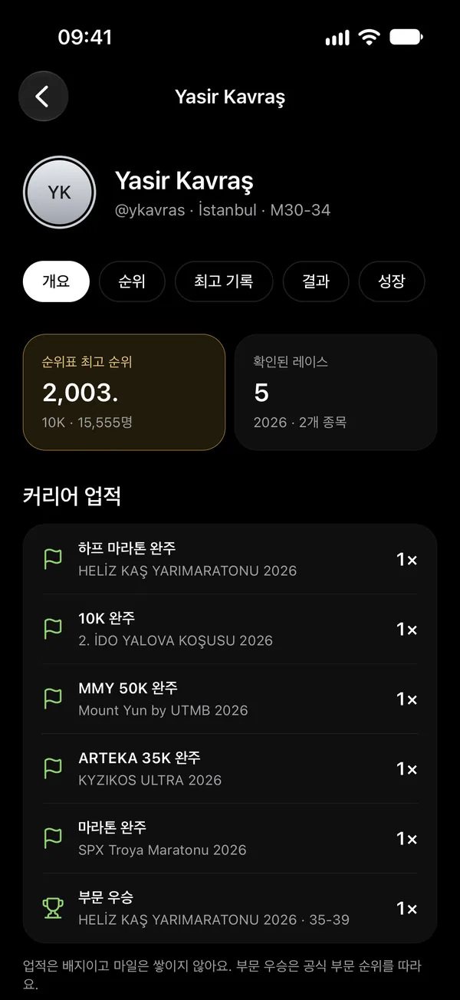
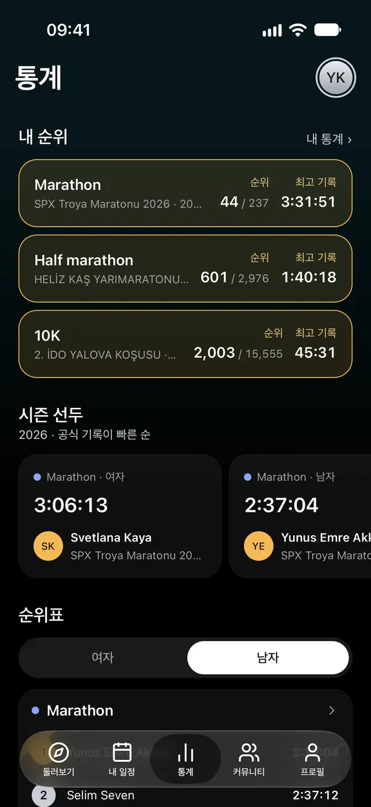
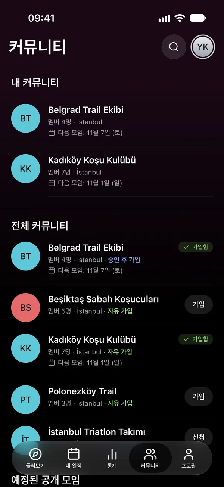

06캘린더
캘린더에서도 늘 최신이에요
한 번의 탭으로 이벤트를 캘린더에 추가하거나, 내 일정을 휴대폰 캘린더에 실시간 구독으로 연결하세요. 날짜가 바뀌면 캘린더도 따라 바뀌어요.

로드 러닝 · 트레일 · HYROX · 트라이애슬론 · 오픈 워터
레이스를 찾고, 커리어를 쌓아요.
러닝, 트레일, HYROX, 트라이애슬론, 오픈 워터 레이스와 클럽 모임을 도시와 종목별로 찾아보세요. 누가 가는지 보고, 공식 결과를 내 커리어에 쌓아요.


01둘러보기
레이스와 클럽 모임을 도시와 종목별로 살펴보고, 이벤트 지도에서 한눈에 확인하세요.


02내 일정
“참가하기”를 누르면 이벤트가 내 일정에 추가돼요. 팔로우하는 사람들이 어디에 가는지 보고, 내 일정을 누구에게 보일지 직접 정하세요.
내 일정을 누구에게 보일까요?

03커리어
결과는 주최 측 공식 기록에서 가져와요. 레이스를 고르고 내 결과를 찾아 “이게 나예요”를 선택하세요. 승인되면 내 커리어와 개인 최고 기록에 더해져요.

04통계
순위표는 순위 공개를 허용한 기록 측정 업체의 공식 결과로 채워져요. 내 종목과 방식의 시즌 선두와 내 위치를 확인하세요.

05커뮤니티
클럽을 찾아 가입하고, 모임을 내 일정에서 확인하고, 공지도 놓치지 마세요. 공개 모임은 멤버가 아니어도 참여할 수 있어요.

06캘린더
한 번의 탭으로 이벤트를 캘린더에 추가하거나, 내 일정을 휴대폰 캘린더에 실시간 구독으로 연결하세요. 날짜가 바뀌면 캘린더도 따라 바뀌어요.

07팔로우와 알림
러너와 클럽을 팔로우하세요. 내 일정의 레이스가 바뀌거나, 내 결과가 승인되거나, 클럽에 공지가 올라오면 알려 드려요.
Raceport를 다운로드하고 시즌 계획을 시작하세요.